エッジ・アプリケーション・データの3層。状態はS3にだけ置き、アプリケーション層は使い捨てにする。
CloudFrontが利用者に最も近い場所で応答を返し、キャッシュできるものはアプリケーション層へ届けない。
API GatewayとLambda。リクエストごとに起動し、終われば消える。ここに状態を持たせない。
S3。配信するオブジェクトと設定の唯一の置き場。バックアップと監査もここだけを見ればよい。
